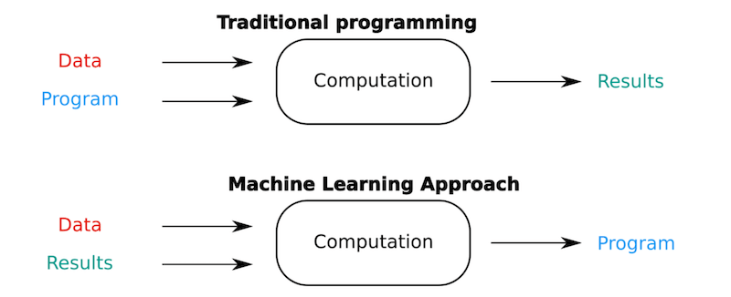
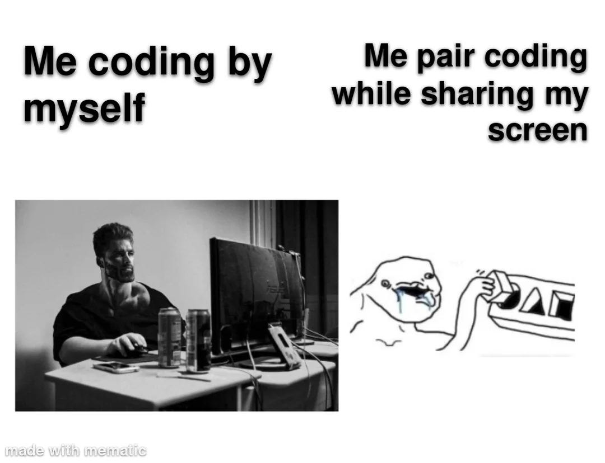

Keyboard shortcuts:
N/СпейсNext Slide
PPrevious Slide
OSlides Overview
ctrl+left clickZoom Element
If you want print version => add '
?print-pdf' at the end of slides URL (remove '#' fragment) and then print.
Like: https://wwwcourses.github.io/...CourseIntro.html?print-pdf
За преподавателя
Ива Е. Попова
- Преподавателски опит:
- 5 години като асистент в Технически Университет, гр. София.
Курсове: "Програмни Езици", "Дискретна математика", "Експертни системи и Изкуствен Интелект".
- 7+ години към водещи частни учебни центрове.
Курсове: "Data Bases (MySQL)", "Front-End Development", "Python", "Machine Learning".
- Професионален опит:
- 7+ години като софтуерен инженер (4 от които като старши инженер и ръководител на екип) в международни IT компании (Comptel(<Nokia), Internet Securities, Datamax, Experian).
- 6+ години като изследовател и консултант в стартъп компания в областта на Изкуствения Интелект (Sentiment Analysis , Ontologies, NLP(+LLM)).
- Образование:
- Средно образование, НПГ по КТС - гр. Правец
- Маг. инж. по Компютърни Системи, Технически Университет, гр. София:
- Докторант по Системи с Изкуствен Интелект, Технически Университет, гр. София
Какво ще научите по време на курса?
Какво ще научите по време на курса?
Как работи ChatGPT и Големите Езикови Модели (LLM)
- Концепцията за **Големи Езикови Модели (LLM)**: Какво представляват и защо са "големи".
- Архитектурата **Трансформър (Transformer)**: Основата на GPT (Generative Pre-trained Transformer).
- LLM като усъвършенствана система за **предсказване на следващата дума (next token prediction)**.
- Концепцията за **Токенизация** и **Embeddings**: Как текстът се превръща в числов формат за модела.
- Разлика между **Pre-training** и **Fine-tuning**

Реални примери и приложения в бизнеса и ежедневието
- Автоматизация на рутинни задачи (писане на имейли, обобщаване на срещи).
- Поддръжка на клиенти (Чатботове и виртуални асистенти, базирани на LLM).
- Генериране на **маркетингово съдържание** и креативни текстове.
- **AI асистенти за програмиране** (GitHub Copilot, Cursor). Vibe Coding
- Използване за **NLP и анализ на текст** (Sentiment Analysis, класификация на документи).
Настройване на работната среда (Hands-on)
- Инсталация на **Python 3.x**
- Запознаване с **Jupyter Notebooks / Google Colab** (предимства за ML/AI).
- Създаване на **Виртуална Среда (Virtual Environment)**
- Инсталация и работа с първите необходими библиотеки (`pandas`, `numpy`, `openai`).
Какво е Изкуствени Интелект (ИИ)?
Какво е Изкуствени Интелект (ИИ)?
- Изкуственият интелект (ИИ) е интердисциплинарна област, целяща създаването на системи способни да изпълняват задачи, изискващи човешка интелигентност - като разпознаване на реч/образи, вземане на решения, игри и др. Достиженията в следните науки играят решаваща роля за развитието на ИИ:
- Информатика и компютърни науки - основа на алгоритмите, програмирането и изчислителните модели.
- Математика и статистика - използват се за моделиране, анализ на данни и вероятностни изводи.
- Лингвистика - прилага се в обработката на естествен език (**Natural Language Processing - NLP**).
- Невронауки (невробиология) - вдъхновяват модели като невронните мрежи, базирани на структурата на мозъка.
- Психология и когнитивни науки - изучават мисленето, възприятието и ученето, за да се моделират интелигентни поведения.
- Философия - разглежда въпросите за съзнанието, знанието и **етиката** на интелигентните системи.
- Инженерни науки и роботика - за физическото приложение на ИИ в машини и автономни системи.
Какво е "Машинно обучение" и какви са неговите приложения?
Какво е "Машинно обучение" и какви са неговите приложения?
- Машинно Обучение (ML) е подобласт на Изкуствения Интелект (AI), която дава възможност на системите **да се учат от данни** и да подобряват изпълнението си на дадена задача, без да бъдат изрично програмирани за нея. 
- Основната идея: Даваме на алгоритъма данни и очаквани резултати, а той открива **скритите модели и правила**, които свързват входа с изхода.
- ML моделите се делят на три основни типа:
- Supervised Learning (Наблюдавано обучение): Учи се от *маркирани* данни (напр. снимки с етикет "котка"). Използва се за **Класификация** и **Регресия**.
- Unsupervised Learning (Ненаблюдавано обучение): Намира *скрити структури* в немаркирани данни. Използва се за **Клъстериране** и **Намаляване на размерността**.
- Reinforcement Learning (Обучение с подсилване): Агентът се учи чрез **опит и грешки** в интерактивна среда, получавайки награди или наказания.
{kind=link}
Класификация и Разпознаване на Образи (Supervised Learning)
- Разпознаване на обекти/лица: Системи, които идентифицират хора, предмети или животни в снимки и видеоклипове.
- Филтриране на Спам: ML моделът класифицира входящия имейл като "спам" или "не-спам" въз основа на съдържанието.
- Медицинска Диагностика: Анализ на рентгенови снимки или ЯМР за автоматично откриване на аномалии или заболявания.

Регресия и Прогнозиране (Supervised Learning)
- Прогнозиране на цени: Предсказване на бъдещи цени на имоти, акции или суровини въз основа на исторически данни и пазарни фактори.
- Кредитен риск: Оценка на вероятността даден клиент да изплати заем (кредитен скоринг).
- Прогноза за времето: Използване на сложни ML модели за по-точни и локализирани метеорологични прогнози.
Системи за Препоръки и NLP (Unsupervised & Supervised)
- Recommendation Systems: Алгоритми (като Collaborative Filtering), които анализират потребителското поведение, за да предлагат продукти, филми или музика (Netflix, Amazon, Spotify).
- Обработка на Естествен Език (NLP): Техники за машинно разбиране и генериране на човешки език. Основа за **ChatGPT** и LLM.
- Sentiment Analysis: Определяне на емоционалния тон (положителен, отрицателен, неутрален) на текст - ключов компонент във втория проект на курса.
Генеративен AI (Generative AI) и Асистенти
- Content Generation: Създаване на нов, оригинален текст, изображения, музика или видеоклипове (като DALL-E, Midjourney).
- AI Асистенти: Чатботове и виртуални помощници, използващи **LLM** за сложни, контекстуални разговори и решаване на задачи (ChatGPT, Claude, Gemini).
- AI-assisted Coding: Инструменти като GitHub Copilot, Cursor, и пр., които генерират и помагат за писането на код, базирайки се на въведения контекст и коментари.
{kind=link}
(Не толкова) кратка история на AI и ML
(Не толкова) кратка история на AI и ML
Началото
- 1950 - The Turing Test
- 1956 - Dartmouth Conference: the birth of AI
- 1958 - F. Rosenblatt created the Perceptron algorithm
- 1959 - A.Samuel coined the term "machine learning"
- 1964 - Joseph Weizenbaum created ELIZA (the first chat bot)
- 1958 - 1972 - AI Optimism
- 1970 - 1973 - The WABOT-1
- 1974 - 1980 - The first AI winter
- 1969 - 1986 - The dark age of connectionism
- 1986 - Ernst Dickmanns builds the first robot cars
- 1980-1987 - The Boom of Expert Systems
2000та
- 1996 - "Deep Blue" became the first machine to win a chess game against a world champion
- 2007 - Facebook started working on DeepFace
- 2009 - Google starts the self-driving car project
- 2011 - IBM's Watson computer defeated television game show Jeopardy! champions
- 2011 - 2014 - The boom of virtual assistants: Apple's Siri, Google's Google Now, and Microsoft's Cortana
- 2014 - Google acquires DeepMind
- 2015 - Elon Musk and other tech giants donated 1 billion dollars for OpenAI
- 2016 - Google's AlphaGo program beat a human professional Go player
- 2018 - OpenAI's OpenAI Five defeats professional Dota 2 players
- 2019 - OpenAI releases GPT-2
- 2020 - OpenAI releases GPT-3 (175 billion parameters)
- 2020 - Google’s AlphaFold demonstrates breakthrough performance in protein folding predictions
- 2021 - OpenAI introduces DALL-E
- 2023 - Meta introduced LLaMA
- 2023 - OpenAI releases ChatGPT, based on GPT-4
- 2023 - Anthropic introduces Claude
- 2023 - Google introduces Bard (now Gemini)
- 2024 - INSAIT announced BgGPT, the first open AI model for Bulgarian language
AI и ML в България
- 1964 - Институт по техническа кибернетика към Българска Академия на Науките
- 1978 - 1990 - Институт по инженерна кибернетика и роботика към Българска Академия на Науките
- 1983 - 1991 - Технически Университет - София: проф. Людмил Даковски създава първата научноизследователска лаборатория по изкуствен интелект.
- От 1990та: ТУ, СУ (ФМИ), НБУ и др. включват в магистърските си програми множество дисциплини, свързани с AI, ML и Роботика.
AI и ML в България
- През 2022г. в България официално отвори врати Институтът за компютърни науки, изкуствен интелект и технологии ( INSAIT ).
Как ще протича обучението
Как ще протича обучението

- Презентациите ще бъдат достъпни онлайн, като ще могат да бъдат свалени в PDF формат.
- освен теоретичен материал, съдържат множество примери, линкове към подбрани безплатни ресурси (блогове, видеа)
- Live Coding
- Ще илюстрираме темите и ще се упражняваме с код, много код...
- Ще имате достъп до GitHub репото за курса и кода който пишем в часовете. 
{kind=link}
These slides are made by
customized version of
framework